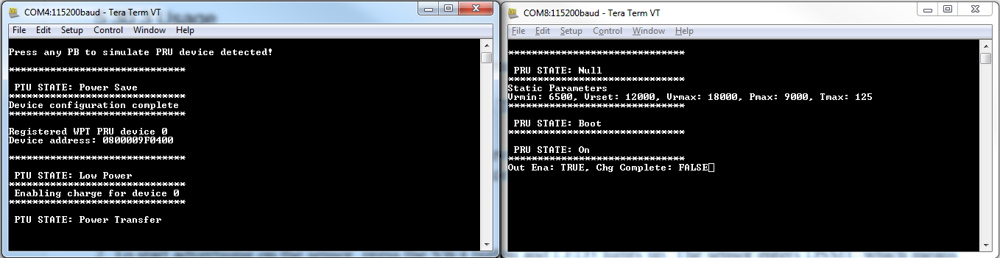
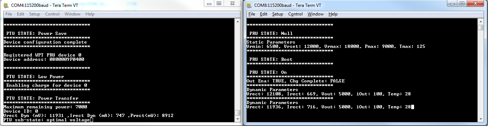
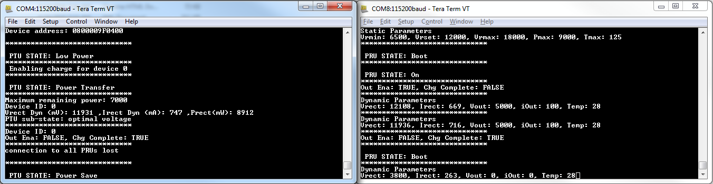
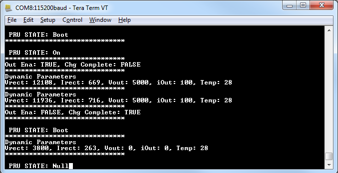
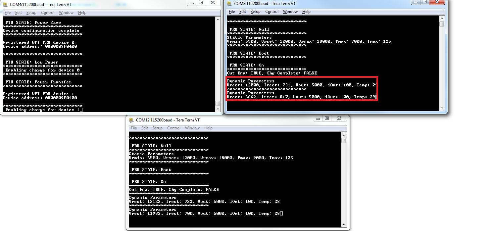

The setup requires two or three FRDM-KW41Z platforms, one for PTU device and one or two for PRU devices.
- Open serial port terminals for all the platforms. The start screen is displayed after the board is reset. At first the LEDs are flashing on all devices.
- Press SW4 on the PTU device and on a PRU device. LED3 should start flashing on both devices until the connection is established or until the PRU device times out.
- After the registration procedure is finished the PTU device will display a success message and will simulate the procedure for providing power to the PRU.
Figure 1. PTU and PRU after connecting, registering and enabling charge

- Short press SW4 on the PRU device again to print most recent dynamic parameters.
- Long press on SW4 on the PTU device to get system information.
Figure 2. PTU information and PRU dynamic parameters display

- Long press SW4 on the PRU device to simulate a charge complete event.
Figure 3. PRU device charged

- Very long press SW4 on the PRU device to simulate power removed and return it into a “Null” state.
Figure 4. PRU power removed

- If a second PRU device is used, SW4 can be short pressed on both the PTU and on the new PRU after step 3 was finished for the previous PRU. Also, to test the power
sharing procedure support, the gAdjustPowerCommandSupport_d macro should be defined as TRUE on at least one of the PRU devices before flashing the firmware.
If the above macro is set to TRUE a scenario is designed so that two PRU devices combined require more power than the PTU device can provide, but the PTU device attempts a
power sharing procedure so that it can adjust the power draw for at least one of the PRU’s.
Figure 5. Power sharing support on one PRU
